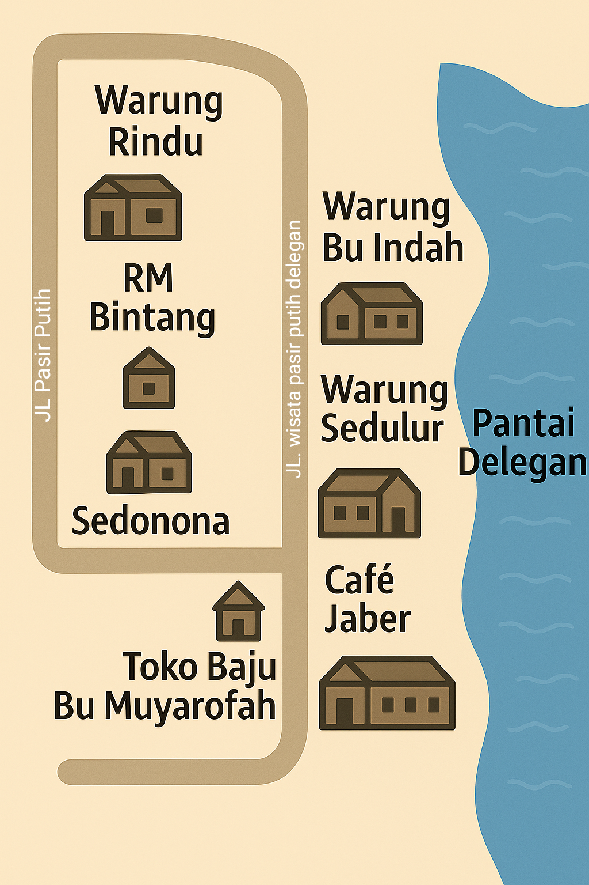

Rute dari Kota Gresik ke Pantai Delegan
Dari pintu masuk Kota Gresik, ambil jalan utama menuju Bundaran GKB (Gresik Kota Baru). Dari bundaran, lanjutkan ke arah utara lewat Jalan Raya Manyar. Ikuti jalan ini sampai masuk ke wilayah Manyar. Setelah itu, cari petunjuk arah menuju Pantai Delegan. Ikuti jalan menuju Desa Delegan, melewati tambak-tambak dan jalan pedesaan. Tak lama, Anda akan sampai di gerbang Pantai Delegan. Nikmati suasana pantai yang tenang dan indah!
